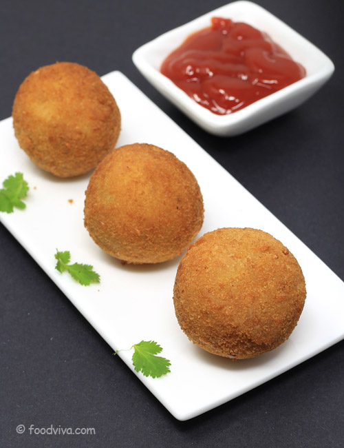

Chesse Ball Recipe

Description
Cheese balls are savory, bite-sized snacks made from a mixture of cheese, spices, and sometimes herbs, shaped into small balls. They can be coated in breadcrumbs, nuts, or herbs for extra flavor and texture. These delicious appetizers are often served at parties or as a tasty snack.
Ingredients
- 1 cup shredded cheddar cheese
- 2 large potatoes (boiled and mashed)
- 1/2 teaspoon garlic powder
- Salt and pepper to taste
- 1/2 cup breadcrumbs (for coating)
- 1/4 cup flour (for binding)
- Oil (for frying)
Steps
- Mix ingredients: In a bowl, combine the mashed potatoes, shredded cheddar cheese, Parmesan cheese, garlic powder, salt, pepper.
- Form balls: Shape the mixture into small balls.
- Coat the balls: Roll the potato balls in breadcrumbs to coat them evenly.
- Fry: Heat oil in a pan over medium heat. Fry the cheese potato balls until golden brown and crispy.
- Serve: Drain excess oil on paper towels and serve hot with dipping sauce or chutney.